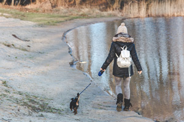
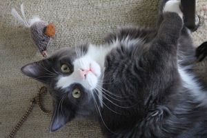

Donate
Our Doggos and Kittehs alway want MORE:
- more food - wet and dry
- more toys
- more blankets and beds
- more kitty litter
- more money (if you're able, it's tax deductible!)
Volunteer
- 
- 
Our doggos and kittehs are always in need of exercise and play time! You can volunteer anytime. Just stop by and fill out a volunteer form, get a badge, and have at it. Take a dog for a walk or to the park to play fetch. Cuddle with the kitties and get them up and chasing some toys. Any exercise is good exercise!